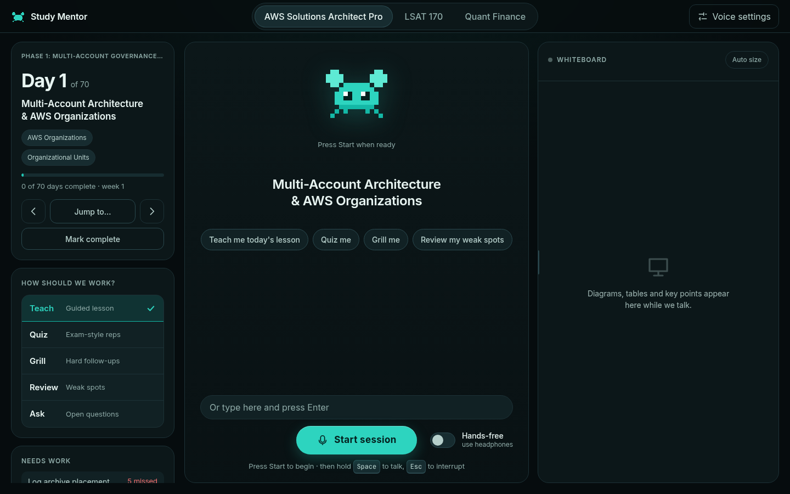

Study Mentor
A voice-first tutor that runs on your own computer. Talk through your lesson, get quizzed, and watch it draw the idea.

What it does
Teaches, does not read
Explains in its own words, asks questions, and pushes back. It engages you instead of reciting text.
Draws as it explains
Tables, key points, and Mermaid diagrams with each node highlighted step by step. The whiteboard resizes itself to fit the content.
Remembers what you miss
Local SQLite progress tracking. Weak topics come back in future sessions, and your streak is preserved.
Private and cheap
Speech runs on your machine. Only text goes to the language model API you choose. About a few dollars a month with a cheap model.
How it works
Browser
mic, captions, whiteboard
Local server
FastAPI
Language model API
Local server
→ Kokoro voice
Browser
→ faster-whisper hearing
Quick start
- Clone the repository and enter the directory.
- Create a virtual environment and install dependencies.
- Add your API key to
~/.config/study-mentor/deepseek.key. - Download TTS models into
~/.local/share/study-mentor/tts. - Run the server and open the local URL.
git clone https://github.com/consultantstanleymn/study-mentor.git
cd study-mentor
python -m venv venv
venv/bin/pip install fastapi "uvicorn[standard]" httpx beautifulsoup4 lxml faster-whisper numpy soundfile kokoro-onnx python-multipart
put your API key in ~/.config/study-mentor/deepseek.key
download kokoro-v1.0.onnx and voices-v1.0.bin into ~/.local/share/study-mentor/tts
./run.sh
open http://127.0.0.1:8765Bring your own curriculum
Day-based folders (days.json plus day pages) or a week-based checklist file. Register your content in server/content.py.
Keys and shortcuts
- Space Hold to talk
- Esc Interrupt
- Hands-free switch (use headphones)